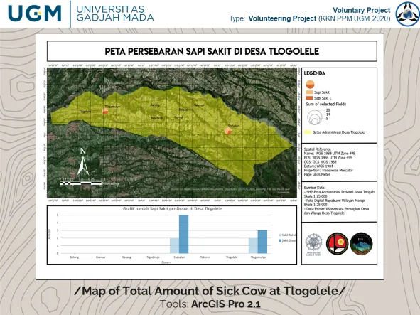
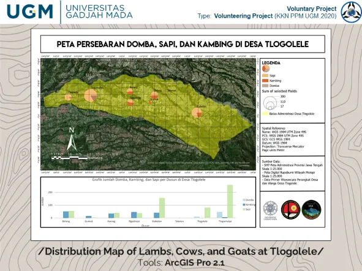
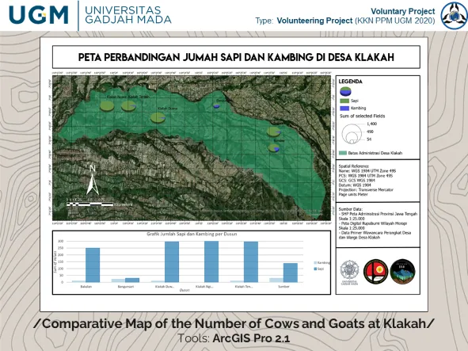
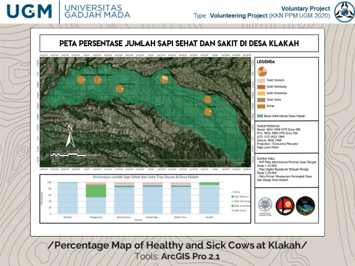
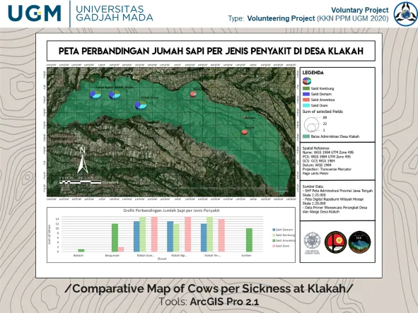

Back to portfolio
Livestocks Map at Klakah and Tlogolele
Compilation
This map were made as one of the outputs for the voluntary project (KKN PPM UGM 2020) that were held at Klakah and Tlogolele Village, Selo, Boyolali, Central Java.




